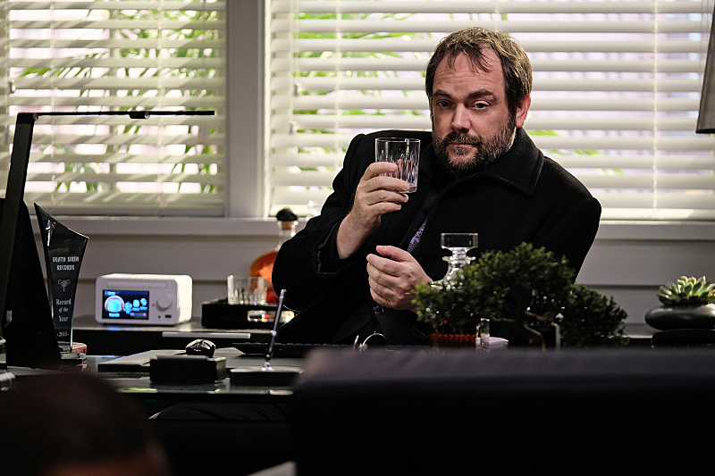
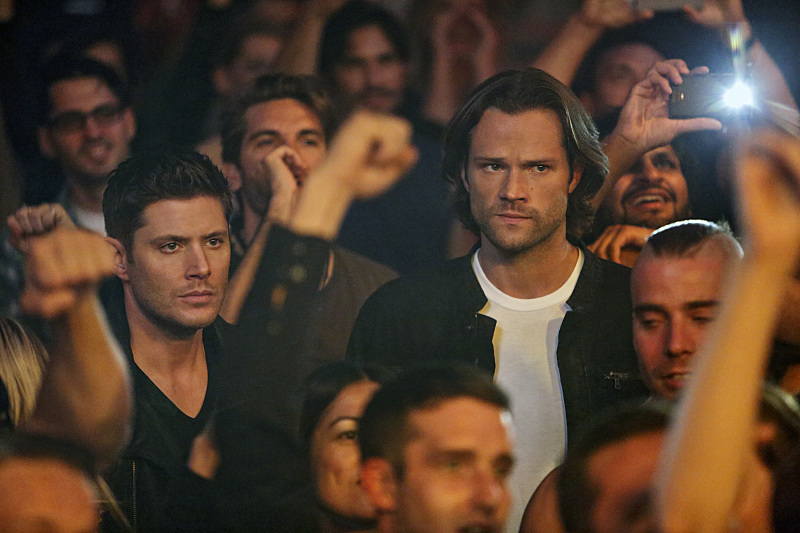
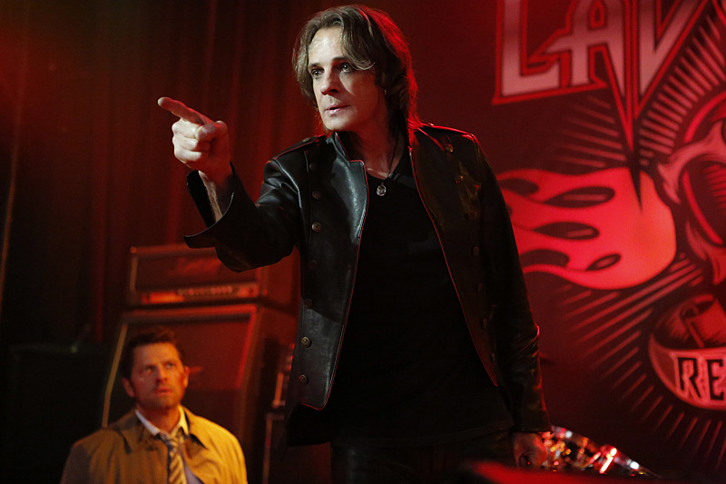
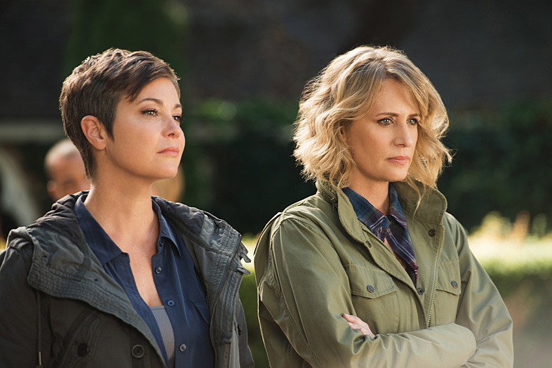
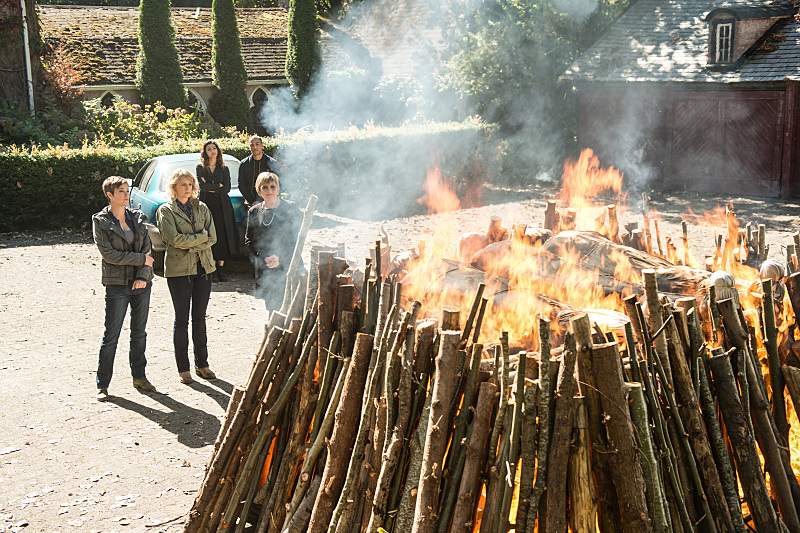
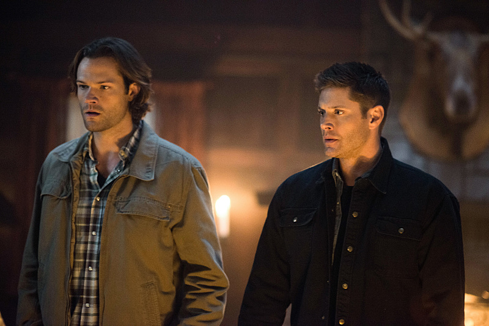

Blog
-
  
S12E07
DECEMBER 1, 2016Temporarily fixing his vessel with one of his fossilized angel feathers, Lucifer goes to Los Angeles reviving Vince Vincente's rock career for fresh worshipers. Dean, Sam, Castiel and Crowley try intimidating those in Vince's circle to find out..
Read More -
  
S12E06
NOVEMBER 17,2016In 1980 Emerson, Manitoba, a young boy named Asa Fox is attacked by a werewolf. Asa is saved by Mary Winchester who has been hunting the werewolf for a long time. Inspired by the meeting, Asa becomes a legendary hunter as he grows up before being killed in 2016. Learning of Asa's death, many hunters..
Read More